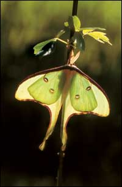
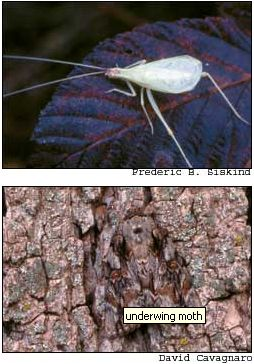
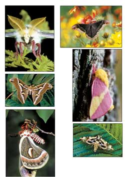
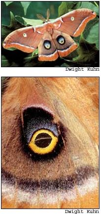

Issue # 208 - February/March 2005
It is late, very late - 2:30 a.m. or so - and I am out prowling my yard. The air is still and warm and moist, the sky a haze of swirling gray clouds easing eastward, alternately covering, then revealing, then covering again a few high twinkling stars and the dim sliver of a new moon.
Quiet. Walk like a fox. Though I’ve come for another purpose - I’m seeking a closer look at the night’s elusive moths - right now I’m playing red-light-green-light with crickets. How silently can I move, how many steps can I take before they hear me and stop their steady chirrr-chirruping? One step, two steps, three, four - the chirping stops: red light!
I freeze in my tracks until, several seconds later, the song resumes, and I try my stealth again. One step, two steps; this silly game actually is no small challenge. A cricket is a remarkably sharp-eared creature, with not just two but four sensitive hearing organs: a pair on each foreleg, just above what we humans might think of as a “knee.”
The organs, called tympana, are small round openings; across each is stretched a thin membrane that vibrates when struck by sound waves, much like our own eardrum. A cricket on alert will cock its body to one side and raise the opposite foreleg to get a better listen.esigned to detect the faint rustle of a predatory insect or the far-off calls of a willing mate, a cricket’s hearing is more than a match for the smash and crunch of a human sneaking around in the middle of the night.
Three steps, four, five - this time when the chirping stops and then resumes I stay where I am and, starting to count the chirrups, glance at my watch.rat, too dark to see. I’ve been counting cricket chirps since I was a child, when I first read that the number of chirps a cricket produces in a given amount of time can serve as a sort of thermometer. The formulas vary, but the idea’s always the same: Count the number of chirps in X seconds or minutes, then add, subtract or divide by Y, and you have the temperature.
In principle, at least, the notion makes sense. Crickets, like other insects, are cold-blooded (their body temperature matches the temperature of their surroundings) and are more active in warm weather. They chirp by raising their forewings at an angle and rubbing the bases together. The warmer the temperature, the faster they rub.
Never mind that different species of crickets chirp differently, at different rates. Over the years I’ve found the cricket thermometer to be right almost as often as it is wrong. Still, I go on counting, if for no other reason than I want to be able to tell the temperature from cricket chirps. I feed my faith on those occasions when the chirps and the thermometer actually come close to agreement. When they don’t - well, what do you expect of unscientific folklore, anyway? In my experience, the temperature-telling formula that’s closest to what you might call reliable is:
(Chirps per Minute ÷ 4) + 40 = Temperature
Some say the formula works best with the chirps of snowy tree crickets, the only arboreal cricket species that produces individual chirps. Other tree crickets make a steady chirrrrrrrrrr, which is not countable at all. And the chirps of field crickets are supposedly less accurate as thermometers than the tree variety. Personally, I’ve found them all to be about equally “reliable.”
But enough with cricket diversions. Tonight I’m occupied with another intriguing activity I discovered years ago: sugaring for moths. And just ahead in the dark I can make out my first bait tree, a big poplar at the edge of the driveway.
It is a surprise to many people to learn that there are at least five times as many kinds of moths in the world as there are butterflies. By most estimations butterfly species number about 20,000. But there are at least 105,000 distinct types of moths - and perhaps twice that number, according to some entomologists.
We see more butterflies more often because we and the butterflies are diurnal - we operate on a daytime schedule and rest at night. Most moths, on the other hand, are strictly night fliers and hide during the day, disguised as bird droppings, dead leaves, lichens or tree bark.
So we catch, collect and photograph butterflies, and even cultivate special gardens to attract and nourish them. Meanwhile, the far more numerous and diverse moths, like most of nature’s nocturnal beings, get little attention from slumber-prone wildlife watchers.
That’s too bad, for few insect families boast as many lovely members. There is the delicate pale-green Luna, the pastel-hued rosy maple moth, the owl-eye spotted Io, the spectacular tawny-winged Polyphemus. There are the huge sphinxes, the brown- or silver-spotted tigers, the tree-bark-camouflaged underwings.
Because moths are furtive and often inconspicuous, getting a close look calls for a little trickery. A light (or better yet, a black light) with a sheet draped in front of it and over the ground below will attract a variety of interesting moths. Set the light trap in the darkest possible place.
But sugaring for moths is a more traditional (and, I think, enjoyable) method - and one that doesn’t tether you to an electric outlet. In moth-watcher language, “sugar” is a bait or attractant, a gooey home-brewed mixture of assorted sweet and fermented ingredients for which night fliers have a fondness. There are all sorts of sugar recipes - indeed, part of the fun of sugaring is experimenting with your own concoctions. Here is a classic, proven formula:
3 to 6 overripe bananas
½ to 1 cup molasses, corn syrup, honey or sugar
1 to 2 cups orange juice or other fruit juice
1 or 2 bottles stale beer
1 to 2 ounces rum
Mash or blend the bananas first, then stir in the sugary ingredients. Add the liquids last, a little at a time, until the mixture is about as thick as house paint. If it becomes too thin, just add another banana or two. Finally, put the mixture in a jar or bowl, cover it and leave it to ferment in the sun for a few hours.
Remember that this is just a basic recipe, open to all sorts of improvisation. Some cooks don’t include alcoholic ingredients, and instead add apple cider vinegar to the brew. Others swear by certain liquors (my local moths prefer Ron Bacardi) or kinds of juices that mimic those of local fruit trees (cherry and apple juices are popular). In any case, the objective is to produce a highly aromatic, cloyingly sweet and somewhat potent goo.
Now you’re ready to go “sugaring.” The best nights for attracting moths are cloudy, warm and still. In late afternoon or early evening, before sunset, go out and paint an 8-inch-square (or so) patch of sugar on tree trunks or other objects - fence posts, rocks, whatever - in promising moth territory. Usually, the best places are in open woods or in edge habitat, where trees or bushes meet a clearing of some sort: a lawn, a meadow, a driveway. Be aware, however, that moth sugar can leave a stain.on’t paint it on prized yard trees or other conspicuous landscape elements.
Several hours later, in the darkest part of the night, go back with a flashlight to check your “traps.” With luck, you should see at least one or two moths on each patch of sugar. Mind you, not all sugaring expeditions are successful - perhaps the weather or the site you picked isn’t right, or maybe your latest sugar recipe is a dud. But more often than not, you will be treated to a close-up look at some astonishingly beautiful and interesting creatures. Many moth species that are attracted to sugar are especially big and beautiful.
Perhaps because they’re too busy sipping - or, if you’ve served them a cocktail, because they’re a tad besotted - moths at a sugaring site tend to stay put when you approach. They are easily caught - but I prefer simply to study them where they are, using my flashlight and a field guide for on-the-spot identification. (If your flashlight’s too bright, put some red cellophane or tissue paper over the lens, or just hold your hand over it, to keep the light from disturbing the moths.)
Incidentally, a variety of other interesting insects, beetles especially, also are attracted to moth sugar.on’t miss your opportunity to get a close look at these visitors, too.
I approach the bait tree slowly, from the side opposite the patch I painted with sugar - my heart is pumping hard with anticipation. In the dark I ease around the trunk and, holding one hand over the lens, flick on my flashlight. Ah! Sipping at the left edge of the sugar patch is a striking brown-striped sphinx - Darapsa myron, or Virginia-creeper Sphinx, according to my field guide. Its wings are nearly 3 inches across and ruffle-edged, the velvety body distinctly pointed at the rear, the antennae backswept. And in a grouping near the patch’s center are three underwings (Catacola spp.). One, sensing my presence, suddenly spreads its bark-hued forewings, revealing lower wings vividly banded with black and orange, then flutters off into the night. This is a scare tactic called a startle response; in theory, the sudden change in appearance will surprise a predator long enough for the quick-change artist to flee.
Awestruck, I stand and admire these graceful, little-seen creatures, their eyes afire in the muted light. A screech owl calls in the distance. There is a rustle of leaves behind me - probably a mouse seeking deeper cover. The night air is crisp and full of insect song. Sleep is a poor substitute for an experience such as this. I am as awake as a person can be, caught up in an adventure described by the English poet Lord Byron more than a century ago: “In her starry shade of dim and solitary loveliness, I learn the language of another world.”
I flick off the flashlight and head toward my next bait tree, an old mockernut hickory just up the hill.
Mother is pleased to report that contributing editor Terry Krautwurst recently won two prestigious writing awards for his Mother’s Nature columns. The Outdoor Writers Association of America awarded “Oh ‘Possum!” (August/September 2003) first place in the natural history magazine category. And “Barn Owl Magic” (December/January 2004) won best outdoor magazine story from the Southeastern Outdoor Press Association.
Moths obviously do fly into light, but the general consensus is that they’re not actually attracted to light - they’re just confused or otherwise disoriented by it. The reason why is open to debate, one that rages on among lepidopterists (those who study moths and butterflies). Some believe it’s because moths navigate by maintaining a constant angle to the moon or a star. Given a nearby bright light, rather than a distant cosmic body, this constant-angle steering would cause the moth to gradually spiral inward.
Others cite a theoretical phenomenon called the Loeb contraction, an inhibition of muscular action reportedly observed in some animals on the side nearest bright light. This could produce a ball-and-chain effect. A moth encountering a light to one side would become “weaker” on that side; the opposing “stronger” wings would push it toward the light.
Still another theory is that moths perceive a false dark region around intense light - a night-flying insect’s version of a watery desert mirage - and fly toward it to escape the glare. Others postulate that certain light frequencies invoke the same come-hither electrochemical responses in male moths as do female-moth sex pheromones. This, at least, could explain a moth’s apparent willingness to plunge into flame.
|
 Luna |
 Top: The warmer the weather, the more crickets (such as this snowy tree cricket) chirp, leading to fun if not scientific formulas for temperature telling. Above: Can you spot the underwing moth? |
 Moths clockwise from top left:Promethea , rosy maple, satellite sphinx, cecropia and Cynthia. |
|
 Several moths, including the Polyphemus, shown here, have large “eyes” on their hind wings. When predators approach, the moths unveil their hind wings, creating the startling illusion of an owl opening its eyes. |
|
|